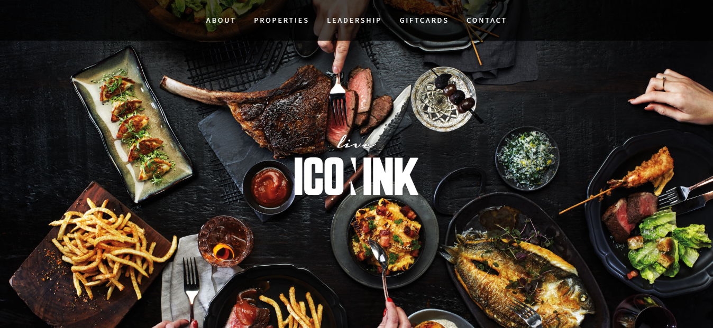
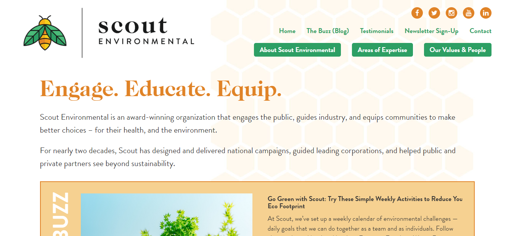
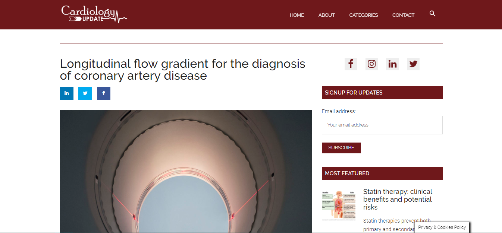

About
I am a freelance professional having more than 4 years of experience in web development and design. I have also been working in the Educational Technology sector for 3 years, a field that I love.
I've always been interested in human-machine communication and the good use of technology. I got into the world of web/mobile development with the intention of creating unique interactive platforms and intuitive designs that improve the user experience.
I'm a patient and positive person motivated to listen and learn continuously.
I also enjoy art, especially music and photography.
Work

Iconink (and all its properties)
Iconink is a full service international hospitality company and lifestyle brand. Fusing lifestyle, fine dining and entertainment under the same roof of restaurants, bars and venues worldwide, Iconink offers world class menus with trendy aesthetics for an exclusive experience across 15 different venues. All of them have their own web presentation and all of them need constant maintenance, fast and effective web solutions and attractive designs that improve the user's experience.
Technologies Used: Wordpress, JavaScript, PHP, HTML5, CSS3, Responsive Design, UI/UX, Adobe Photoshop, Adobe Illustrator
Full Credits: LFTFIELD Inc.
View Live

40elephants
40elephants aim’s to empower individuals and amplify this new age of creative thinking with resources, platforms, and networks to bring radically fresh ideas to the forefront. To transmit their philosophy, they wanted a casual web design, a visual responsive structure and a fully functional online shop.
Technologies Used: Wordpress, WooCommerce, JavaScript, PHP, HTML5, CSS3, Responsive Design, UI/UX, Adobe XD, Adobe Photoshop, Adobe Illustrator
Full Credits: LFTFIELD Inc.
View Live

Scout Environmental
Scout Environmental is an award-winning organization that engages the public, guides industry, and equips communities to make better choices, for their health and the environment. For nearly two decades, Scout has designed and delivered national campaigns, guided leading corporations, and helped public and private partners see beyond sustainability. This Torontonian organization needed a more complex, attractive and complete design for their new website.
Technologies Used: Wordpress, JavaScript, PHP, HTML5, CSS3, Responsive Design, UI/UX, Adobe Photoshop, Adobe Illustrator
Full Credits: LFTFIELD Inc.
View Live

Cardiology Update
Cardiology Update provides up-to-date developments and breaking news in the field of cardiology, in a clear and concise manner. All articles are written by professional medical journalists and subsequently reviewed by our editorial board. Clinicalinx B.V., the dutch private company that owns and operates Cardiology Update, wanted a fully responsive website where to keep informed to all their users in the easiest way.
Technologies Used: Wordpress, JavaScript, PHP, HTML5, CSS3, Responsive Design, UI/UX, Adobe Photoshop, Adobe Illustrator
Full Credits: LFTFIELD Inc.
View Live

Shenasi Concept
Shenasi Concept is a space of creativity and design that enables clients view and purchase unique children's artwork and decor. Sarah (the artist behind this company) wanted to give a modern and streamlined new look to her page. Although her website was initially done in Shopify she needed a completely customized theme to accommodate their highly customized artwork
Technologies Used: Shopify, HTML5, CSS3, Responsive Design, UI/UX, JavaScript
View Live

Ginkgo Mas Lluhí
Ginkgo Mas Lluhí is a trading company of herbodietics products, offering both retail and wholesale services. Andrés and Anna needed an intuitive interface that allowed them to work together with the same database.
Technologies Used: HTML5, CSS3, Responsive Design, JavaScript, PHP, SQL, FileZilla
View Live


VelvetHut
Velvethut is a home cleaning and ironing company that operates throughout Spain. They wanted a web platform where they could manage their services, organize their large database and be able to communicate with customers and providers.
Technologies Used: HTML5, CSS3, Responsive Design, JavaScript, jQuery, AJAX, JSON, SQL
Full Credits: Appbridge Labs S.L
View Live


Fangazing
Fangazing communicates in a simpler and more personal way the artists with their fans, who through the platform, can see contents, buy tickets and acquire exclusive merchandising. They needed a large and robust system to handle all the services and products they offer.
Technologies Used: HTML5, CSS3, Responsive Design, JavaScript, jQuery, AJAX, JSON, SQL
Full Credits: Appbridge Labs S.L
View Live


Waybizz
WayBizz is an exclusive business platform for senior executives and entrepreneurs from America and Spain. They wanted to create a large business networking and to have a direct communication between users in a secure and trusted environment.
Technologies Used: HTML5, CSS3, Responsive Design, JavaScript, jQuery, AJAX, JSON, SQL
Full Credits: Appbridge Labs S.L
View Live

Sezions
Sezions was a mobile application project where the user interacted with it during a live event. They needed a simple app that worked on both, Android and IOS, and where the user experience was fluid and intuitive.
Technologies Used: HTML5, CSS3, Responsive Design, JavaScript, AngularJS, Ionic, SQL
Full Credits: Appbridge Labs S.L